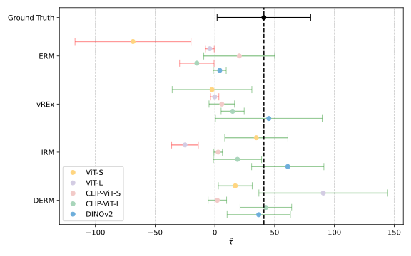

Prediction-Powered Causal Inferences
Valid treatment-effect inference on an unlabeled experiment by fine-tuning a model on a similar annotated one
In many scientific experiments, the cost of annotating data constrains the pace of testing new hypotheses, and machine-learning predictions promise a way out — but only if those predictions yield correct conclusions. This work studies Prediction-Powered Causal Inferences (PPCI): estimating the treatment effect in an unlabeled target experiment, using training data with the same outcome annotated but potentially different treatments or effect modifiers. The authors show that conditional calibration guarantees valid PPCI at the population level, then introduce a sufficient representation constraint — causal lifting — that transfers validity across similar experiments, enforced in practice by Deconfounded Empirical Risk Minimization (DERM), a model-agnostic training objective. The method is validated on synthetic data and on a real ecological experiment, solving instances that are impossible for empirical risk minimization even with standard invariance constraints. In particular, for the first time, it achieves valid causal inference on a scientific experiment with complex recording and no human annotations, by fine-tuning a foundational model on a similar annotated experiment.
Introduction
Deep-learning predictions are now a routine ingredient in scientific analysis — across biology, medicine, sustainability, and the social sciences. But their black-box nature raises a new risk: a model can carry hidden biases that are hard to detect and that may invalidate any analysis resting on its predictions (Cadei et al. 2024). Recent prediction-powered inference methods leverage a predictor to make valid statistical inferences on partially labeled data (Angelopoulos, Bates, et al. 2023; Angelopoulos, Duchi, et al. 2023), training the predictor on an annotated sample and then including its predictions on the unlabeled sample.
This paper focuses on causal inferences from outcome-unlabeled experiments. The goal is to recover the missing labels from their complex measurements — entangled and high-dimensional, such as images or videos — through a predictor, but to train that predictor on a similar yet different annotated experiment (different treatments, different effect modifiers). The authors call this Prediction-Powered Causal Inference (PPCI).
The contribution is threefold: a formulation and foundational theory for PPCI (identification of the prediction-powered causal estimand and estimator properties); a new constraint — causal lifting of neural representations — that transfers causal validity across similar experiments under out-of-distribution fine-tuning, with a practical implementation (DERM); and the first valid causal inference on a scientific experiment with complex measurements and no human annotations.
The PPCI problem
Let (T, W, Y, X) \sim \mathcal{P}, where T is a treatment assignment, W the observed covariates, Y the outcome of interest, and X a complex measurement that captures information about Y. A predictor g: \mathcal{X} \to \mathcal{Y} maps measurements to outcomes. Given an i.i.d. sample in which the outcomes are not observed, the task is to identify and estimate the average potential outcome under intervention,
\tau_Y(t) := \mathbb{E}\!\left[\, Y \mid \operatorname{do}(T = t) \,\right],
from the prediction-powered sample \{(T_i, W_i, g(X_i))\}_{i=1}^n. A human domain expert, trained on similar data, plays exactly the role of g; replacing that expert with a deep model requires guarantees that ordinary accuracy metrics do not provide, since a systematic error in one subgroup can invalidate the causal conclusion.
A predictor is valid when the causal estimand identifies in a statistical estimand and \tau_Y(t) = \tau_{g(X)}(t). The key testable property is conditional calibration: g is conditionally calibrated over Z when
\mathbb{E}\!\left[\, Y - g(X) \mid Z \,\right] \overset{\text{a.s.}}{=} 0 .
Why this is enough. If g is conditionally calibrated with respect to the treatment and a valid adjustment set, the Prediction-Powered Identification lemma gives validity directly from backdoor adjustment, and the corresponding AIPW estimator (Robins et al. 1994) over the prediction-powered sample stays doubly robust with valid asymptotic confidence intervals.
Two lemmas make this precise. Prediction-Powered Identification shows that conditional calibration with respect to the treatment and the adjustment set used for identification makes g causally valid. Prediction-Powered Estimation shows that, under the same condition, the AIPW estimator over the prediction-powered sample preserves double robustness and a valid asymptotic normal limit,
\sqrt{n}\,\bigl(\hat{\tau}_{g(X)} - \tau_Y\bigr) \to \mathcal{N}(0, V),
with V the asymptotic variance.
Generalization challenges
Conditional calibration is testable only where labels exist. The difficulty is training a valid model from a similar annotated experiment and transferring it to an unlabeled target. Two experiments are called similar when their outcome–measurement mechanism is invariant, i.e. \mathbb{P}(Y \mid X = x) = \mathbb{P}(Y' \mid X' = x) on the shared support — the same annotation protocol would apply to both. Crucially, this is an anticausal prediction problem: X is a measurement (a child) of Y, not a cause, which is what distinguishes the setting from invariant causal prediction (Peters et al. 2016). Even so, plain fine-tuning by empirical risk minimization does not guarantee a valid model, for two distinct reasons.
If the training sample is not representative of the target population, the model can over-rely on a spurious measurement–outcome correlation — for example, background information that happens to correlate with treatment in the annotated batch — biasing any downstream causal estimate.
Treatment information captured in the measurement but not mediated by the outcome can mislead generalization even with unlimited data: a double-blind experiment must be blind to the model too. If an outcome value never occurs under the training treatment, the model wrongly transfers that restriction to a target experiment whose treatment merely looks the same.
Causal lifting
To prevent these failures the authors place a constraint on the encoder \phi of the predictor g = h \circ \phi. The Causal Lifting constraint asks that the representation carry no information about the experimental settings beyond what the outcome already explains:
\mathrm{I}\bigl(\phi(X),\, Z \mid Y\bigr) = 0, \qquad Z = [\,T,\, \tilde{W}\,],
with \tilde{W} a valid adjustment set for the ATE. The central result, Causal Lifting transfers causal validity, states that for two similar PPCI problems with identifiable ATE, if the head h is Bayes-optimal and the representation transfers — \mathbb{P}(\phi(X) \mid Y = y) = \mathbb{P}(\phi(X') \mid Y' = y) — then enforcing causal lifting on the target makes g valid there. It combines the strength of modern encoders, which extract sufficient representations, with efficient fitting on limited data. The catch, stated plainly as the paper’s main limitation, is that neither conditional calibration nor the representation constraint can be verified on the target without labels; the bet is that transferring this property is an easier generalization task than transferring calibration directly.
Deconfounded Empirical Risk Minimization
Because experimental settings in scientific studies are typically low-dimensional and discrete, the constraint admits a simple implementation: reweight the training distribution so that outcome and experimental settings become uncorrelated, while keeping the annotation mechanism invariant. Each observation i is reweighted by
w_i = \frac{\hat{\mathbb{P}}(Y^\star = y,\, Z^\star = z)} {\hat{\mathbb{P}}(Y = y,\, Z = z)} ,
computed once before training. The target distribution \mathbb{P}(Y^\star, Z^\star) makes the conditional outcome uniform across settings and up-weights the least-informative (highest-conditional-variance) settings. When the conditional outcome support is full for every setting with positive conditional variance, Y^\star and Z^\star become independent, so the model has no signal to learn the settings and the causal-lifting constraint is enforced by construction. The authors call this procedure Deconfounded Empirical Risk Minimization (DERM). Where the full-support condition fails, the reweighting still down-weights informative settings rather than dropping them, trading off residual spurious correlation against discarding part of the sample.
Experiments

ISTAnt. The method is evaluated on the ISTAnt experiment (Cadei et al. 2024), a real-world benchmark for treatment-effect estimation from complex measurements. The authors ran a similar experiment on their own recording platform, with three different treatments, collecting 44 annotated 30-minute videos, and used these to fine-tune a pre-trained model whose predictions generalize to ISTAnt; the ATE is then estimated by AIPW on the prediction-powered sample. The ground-truth ATE is the AIPW estimate on the true human annotations — roughly a +40 short-clip difference in grooming time per video (at two clips per second, about 20 seconds). Five pre-trained backbones are compared, each with a non-linear (MLP) head trained under four objectives: vanilla ERM; Variance Risk Extrapolation (vREx) (Krueger et al. 2021); Invariant Risk Minimization (IRM) (Arjovsky et al. 2019); and DERM.

As reported, vanilla ERM consistently underestimates or ignores the effect; vREx and IRM (as proposed by Yao et al. (2024)) do better but are still occasionally invalid; DERM is the only method that provides valid ATE inference for all pre-trained models, without ever estimating the effect with the wrong sign (Figure 2).
CausalMNIST. A colored manipulation of MNIST gives full control over the causal effect and Monte-Carlo uncertainty. A convolutional network is trained on one experiment and PPCI is tested on four similar observational studies, varying the treatment-effect mechanism (linear, non-linear) and the experimental-settings distribution to challenge the full-support assumption (soft vs. hard shifts). Table 1 reports the ATE estimation bias and standard deviation over 50 repetitions of the data-generating process.
| Method | In-Distribution | OoD linear · soft | OoD linear · hard | OoD non-linear · soft | OoD non-linear · hard |
|---|---|---|---|---|---|
| Ground Truth | 0.00 ± 0.02 | 0.00 ± 0.02 | 0.00 ± 0.02 | 0.04 ± 0.05 | 0.03 ± 0.05 |
| ERM | 0.00 ± 0.02 | 0.86 ± 0.14 | 1.05 ± 0.15 | 0.64 ± 0.18 | 0.85 ± 0.17 |
| vREx | 0.01 ± 0.03 | 0.83 ± 0.15 | 1.05 ± 0.14 | 0.55 ± 0.17 | 0.82 ± 0.14 |
| IRM | 0.01 ± 0.03 | 0.76 ± 0.18 | 1.02 ± 0.12 | 0.45 ± 0.18 | 0.77 ± 0.17 |
| DERM (ours) | 0.10 ± 0.07 | 0.14 ± 0.14 | 0.75 ± 0.05 | 0.08 ± 0.27 | 0.45 ± 0.12 |
Under soft shifts, DERM solves problem instances that are unsolvable for both ERM and invariant-training baselines; under hard shifts — which challenge its full-support assumption — its bias grows, as the theory anticipates (Table 1).
Conclusion
The paper formalizes valid causal inference when the outcome is latent and only captured through complex measurements, and develops the first identification and estimation results for that setting. Causal lifting gives a sufficient constraint to transfer causal validity across similar experiments, and DERM is a simple, effective way to enforce it. Together they achieve zero-shot identification of the ATE on ISTAnt by leveraging a similar annotated ecological experiment. The authors frame this as a shift in emphasis within causal representation learning (Schölkopf et al. 2021) — away from full identifiability of latent variables and toward representations that power a specific downstream causal estimate. The honest caveat remains that the key assumptions cannot be checked on the target without annotations; the work also relates closely to prior prediction-powered generalizations of causal inference (Demirel et al. 2024; Wang et al. 2024). References appear in the margin and are collected below; a copyable BibTeX entry for this paper is generated automatically.
Citation
@inproceedings{cadei2025,
author = {Cadei, Riccardo and Demirel, Ilker and De Bartolomeis,
Piersilvio and Lindorfer, Lukas and Cremer, Sylvia and Schmid,
Cordelia and Locatello, Francesco},
title = {Prediction-Powered {Causal} {Inferences}},
booktitle = {Advances in Neural Information Processing Systems
(NeurIPS)},
date = {2025-02-10}
}